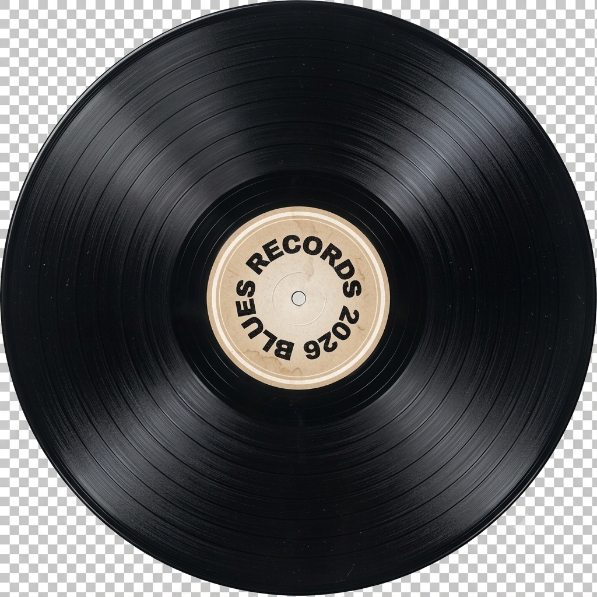

Una plataforma interactiva que usa el poder terapéutico de la música para acompañarte en tu bienestar emocional, adaptada a ti.
"La música expresa lo que no puede ser dicho y aquello sobre lo que es imposible permanecer en silencio." — Victor Hugo

— Quiénes somos
Somos un grupo de estudiantes apasionados por la tecnología, la música y el bienestar emocional. Creamos Blue's para acercar la ayuda emocional de una forma más humana, creativa y accesible.
| Servicio | ¿A quien va dirigido? | Beneficios |
|---|---|---|
| Musico Terapia infantil | Niños con TDH, autismo (TEA) o retraso en el lenguaje. | Mejora la atención, estimula la comunicación y facilita la expresión emocional. |
| Estimulación prenatal | Gestantes (a partir del segundo trimestre) y parejas. | Evoca recuerdos, mantiene la agilidad mental y fomenta la socialización. |
| Atención a adultos y manejo del estrés |
Personas con ansiedad, depresión o estrés laboral. | Fortalece el vínculo con el bebé, reduce el miedo al parto y fomenta la calma. |
| Estimulación Cognitiva (adultos mayores) | Adultos mayores,casos de Alzheimer o demencia temprana. | Evoca recuerdos, mantiene la agilidad mental y fomenta la socialización. |